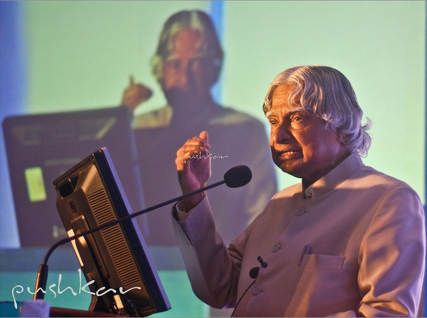

A TRIBUTE TO
A visionary scientist, teacher and the People's President

Dr. A. P. J. Abdul Kalam
Dr. Avul Pakir Jainulabdeen Abdul Kalam was born on 15 October 1931 in Rameswaram, Tamil Nadu. He studied aeronautical engineering at the Madras Institute of Technology and developed a strong interest in science and aerospace technology. His early life and education shaped his determination to contribute to India's scientific and technological development.
Dr. Kalam worked with India's space and defence programmes and became closely associated with the Indian Space Research Organisation and the Defence Research and Development Organisation. He contributed to India's launch vehicle and missile development programmes and became widely known for his work in aerospace and defence technology.
In 2002, Dr. Kalam became the 11th President of India and served in that position until 2007. During his presidency, he was particularly known for his interactions with students and young people. He encouraged students to develop scientific thinking, pursue knowledge and work toward the development of the country.
Beyond science and public service, Dr. Kalam was also an author and teacher. His books, including Wings of Fire and Ignited Minds, introduced his ideas and experiences to a wide audience. He continued to interact with students and remained closely associated with education and inspiring young minds until his death in 2015.
Contributed to India's space programme and played an important role in the development of launch vehicle technology.
Played a major role in India's guided missile development programmes and helped strengthen indigenous technological capabilities.
Served as the 11th President of India from 2002 to 2007 and became widely known for his connection with students.
Received the Bharat Ratna in 1997, India's highest civilian award, for his contributions to the nation.
Abdul Kalam was born on 15 October 1931 in Rameswaram, Tamil Nadu.
He studied aeronautical engineering at the Madras Institute of Technology.
As Project Director, he contributed to the SLV-III programme that successfully placed the Rohini satellite into orbit.
He received the Bharat Ratna for his contributions to the nation.
Dr. Kalam became the 11th President of India and served until 2007.
Dr. Kalam passed away on 27 July 2015 while delivering a lecture to students.
Dreams transform into thoughts and thoughts result in action.